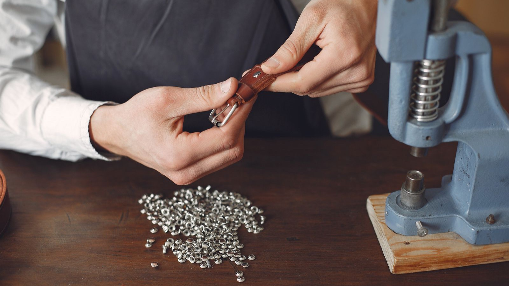
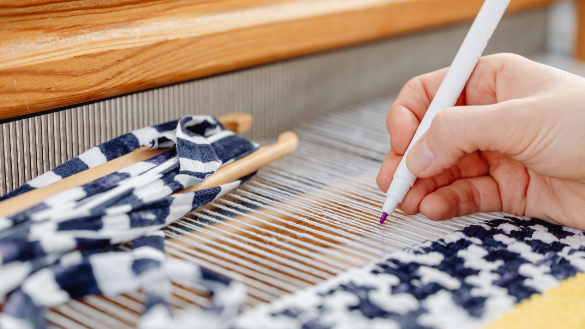
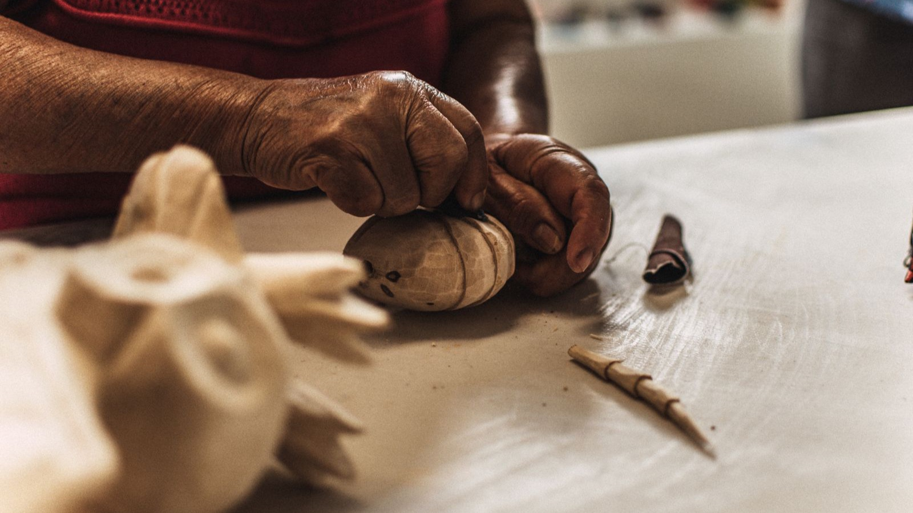

Te ha pasado. Alguien mira tu pieza, le encanta, pregunta el precio… y se le tuerce la cara. "Uy, qué caro." Y tú, por dentro, te encoges. A veces bajas el precio. A veces te disculpas. Y casi siempre pierdes la venta o la cierras malvendiendo tu trabajo.
El problema no es tu precio. El problema es que tu cliente no tiene el marco para entenderlo. Te está comparando con lo que no eres: con la sartén de 12 € del híper o con el bolso de 2.000 € del centro comercial. Y en esa comparación, sin contexto, siempre "pierdes".
Aquí tienes la solución, y por qué la artesanía es mejor que el lujo dicho de forma que tu cliente lo entienda. Dos cosas: primero, el argumento que coloca tu trabajo en su sitio —ni industrial ni lujo, sino algo mejor—; y segundo, y más importante, cómo contárselo a tu cliente para que lo entienda solo. Tu pieza ya vale lo que cuesta. Lo que falta es que se explique.

El valor que se ve, se paga. Cada hora de oficio que tu cliente entiende deja de ser "caro" y pasa a ser "justo".
Parte 1Tu argumento (tenlo clarísimo tú primero)
No puedes explicarle a nadie algo que no tienes cristalino. Así que empecemos por ti. Tu argumento cabe en cuatro ideas.
1 No eres lo caro: eres lo justo
La artesanía no es la opción barata, y está bien que no lo sea. Una pieza hecha a mano lleva tiempo, oficio y buenos materiales, y eso cuesta. Pero "no es lo barato" no significa "es caro": significa que es justo.
La diferencia está en a dónde va el dinero. Cuando alguien compra lujo, la mayor parte de lo que paga no es el producto: el margen bruto de un gigante como LVMH rondó el 68,8% en 2023 (sus cuentas anuales), y marcas como L'Oréal dedican el 32% de sus ventas a publicidad (resultados 2024). Cuando la fiscalía de Milán investigó varias casas de lujo en 2024, encontró bolsos fabricados por 53 € que se vendían por 2.600 € (Reuters). Tu cliente no lo sabe, pero al comprar lujo paga sobre todo el logo. Cuando te compra a ti, paga el producto. Esa es tu primera frase.
Cuando alguien compra lujo, la mayor parte de lo que paga es logo y publicidad. Cuando te compra a ti, paga el producto.
2 Tu mejor arma se llama coste por uso
Es el argumento que desarma el "qué caro". El coste por uso es el precio dividido entre las veces que algo se va a usar. Y le da la vuelta a todo.
Un dato (de un estudio en Psychology & Marketing, 2025): una prenda de 50 € usada cuatro años sale a 0,25 € por uso; una de 20 € que dura uno, a 0,40 €. La "cara" es, en la vida real, casi la mitad de cara. Llévalo a objetos: una sartén de hierro fundido dura décadas y se hereda; un calzado cosido se resuela y aguanta 10-20 años, frente a uno pegado que dura una temporada. Tu pieza no es un gasto: es lo que deja de hacer gastar a tu cliente una y otra vez.
3 Lo tuyo dura, y lo que dura es lo que menos contamina
Aquí entra tu segunda pata, la circularidad, y refuerza el precio. Un objeto que dura es un objeto circular: alargar la vida de una pieza solo nueve meses reduce su huella un 20-30% (WRAP). Lo tuyo está hecho con materiales nobles, se puede reparar y muchas veces se compra cerca de donde se hace —y eso importa: el 80% del impacto ambiental del consumo textil europeo ocurre fuera de Europa (Agencia Europea de Medio Ambiente), en cadenas largas y opacas. Comprarte a ti no es solo mejor producto: es menos huella y economía local. Es un argumento de venta, no un adorno.
4 Por qué eres "mejor" que el lujo (sin atacar a nadie)
El lujo se vende contándote el oficio: las manos, el tiempo, la tradición. Pues bien: eso lo tienes tú de verdad, y sin la prima de marca que ellos cobran encima (y que, como vimos en los escándalos de 2024, a veces es puro relato). No se trata de atacar al lujo, sino de reencuadrar: tú ofreces lo mismo que el lujo presume —oficio real, pieza única, materiales selectos— al precio justo, sin pagar el logo. Eres el punto óptimo entre lo industrial y el lujo: precio justo + alma + durabilidad. (Si quieres profundizar en cómo el lujo construye su precio y su relato, lo desmenuzamos en Artesanía de lujo: por qué tu trabajo vale más de lo que cobras.)
El triángulo, de un vistazo
| Industrial / masa | Artesanía (tú) | Lujo | |
|---|---|---|---|
| Qué paga el cliente | Un producto barato | Materiales, tiempo, manos | Marca y logo |
| Coste por uso | Alto (dura poco) | Bajo (dura y se repara) | Bajo, con prima de marca |
| Único / con alma | No | Sí | A medias (relato de marca) |
| Se repara / dura | No | Sí | Sí |
| Impacto y cercanía | Deslocalizado | Local, trazable | Variable |
Eres el único punto donde se juntan las tres cosas que de verdad importan. Ese es tu sitio. Ahora, a contarlo.

El oficio que tu cliente no ve es justo lo que justifica tu precio.
Parte 2Cómo contárselo a tu cliente
Tener el argumento claro no vende solo. Hay que ponerlo donde tu cliente lo vea, en tus cuatro escenarios.

Cuanto más enseñas el proceso, menos te comparan con lo industrial.
🤝 Cara a cara
En tienda, mercado o feria, cuando alguien diga "qué caro", no defiendas el precio: cambia la conversación al valor. No te disculpes nunca.
"¿Caro comparado con qué? Esto dura años y se puede reparar. Si lo divides entre las veces que lo vas a usar, sale más barato que comprar tres veces lo mismo."
"Lo hago yo, a mano, con [material]. Me lleva [X horas]. No es una copia que está en mil tiendas: es una pieza única."
Y siempre que puedas, enseña el proceso. El valor que se ve, se paga.
📱 En tus redes
No vendas el producto: cuenta cómo se hace. El proceso, las horas, los materiales, el antes y el después. Un vídeo de 40 segundos en el torno educa más que diez posts de "compra ya".
Publica de vez en cuando un carrusel explicando el coste por uso, o lo que cuesta un buen saco de material. Cada pieza de contenido que enseña tu oficio le quita a tu cliente la costumbre de compararte con lo industrial. Estás educando a tu mercado, post a post.
🏷️ En la etiqueta y el packaging
Que la pieza se explique sola cuando tú no estás delante. Una buena etiqueta cuenta: quién la hizo, cuántas horas lleva, qué material y de dónde, y cómo cuidarla y repararla.
Eso justifica el precio sin que tengas que estar ahí para defenderlo, y convierte una venta en una historia que tu cliente repite a los suyos.
💬 Tu guion de dos frases
Apréndetelo. Sirve en cualquier canal, dicho o escrito:
"No mires el precio, mira el coste por uso. Esto cuesta [X] € y te durará [años]: sale a céntimos por uso. Lo barato cuesta menos hoy y más a final de año, porque lo compras una y otra vez."
5 errores que te hacen malvender
- 🚫 Competir por precio. Bajar para igualar al híper es una guerra que no puedes ganar ni te interesa. Tu terreno es el valor.
- 🚫 Disculparte por tu precio. Cada disculpa le dice a tu cliente que tú mismo dudas de que lo valgas.
- 🚫 No mostrar el proceso. Si tu cliente no ve las horas y el oficio, para él no existen. Y lo que no se ve, no se paga.
- 🚫 Hablar de características en vez de valor. No es "es de lino"; es "es de lino cultivado aquí, que dura años y mejora con el uso".
- 🚫 Dejar que la pieza viaje sin relato. Sin una etiqueta que la cuente, tu trabajo llega mudo a casa del cliente.
Un mes para instalar el discurso del valor
- Semana 1 Escribe en una sola frase por qué tu trabajo vale lo que vale.→ Tu argumento, claro y tuyo.
- Semana 2 Publica un contenido mostrando el proceso o las horas de una pieza.→ Empiezas a educar a tu mercado.
- Semana 3 Rediseña tu etiqueta para que cuente quién, cómo y con qué.→ Tu pieza se explica sola.
- Semana 4 La próxima vez que te digan "es caro", usa el guion del coste por uso. No bajes el precio.→ Defiendes tu valor sin pedir perdón.
Al final del mes no habrás cambiado tus piezas: habrás cambiado cómo las entiende quien las compra.
Descárgate la chuleta: Defiende tu precio sin pedir perdón
Una hoja para tener a mano en el taller: las ocho objeciones más comunes con su respuesta literal ("es caro", "lo he visto más barato", "¿me haces descuento?"…), el guion del coste por uso y la frase para recordarte quién eres. Imprímela y que no te vuelvan a pillar a contrapié.
Descargar "Defiende tu precio sin pedir perdón" →Preguntas frecuentes
¿Y si, aun así, me dicen que es caro?
¿No es arriesgado decir que soy "mejor" que el lujo?
¿Esto significa que tengo que subir mis precios?
Vendo online y no hablo cara a cara, ¿me sirve?

Cada pieza lleva horas, manos y una historia. Eso es lo que vendes.
Conclusión
Tu trabajo ya vale lo que cuesta. Lo que cambia las ventas no es bajar el precio: es que tu cliente entienda por qué ese precio es justo. Dale el marco —no eres lo caro, eres lo justo; no eres el lujo, eres algo mejor— y cuéntaselo en tu tienda, en tus redes y en cada etiqueta.
Porque cada oficio guarda una historia que merece ser contada. Y cuando la cuentas bien, el precio deja de ser un problema y pasa a ser la prueba de lo que vales.
Descárgate "Defiende tu precio sin pedir perdón" →
Empieza esta semana. Y si quieres que comunicar tu valor deje de ser cosa de suerte y pase a ser un sistema, mira nuestro Diagnóstico 3D.